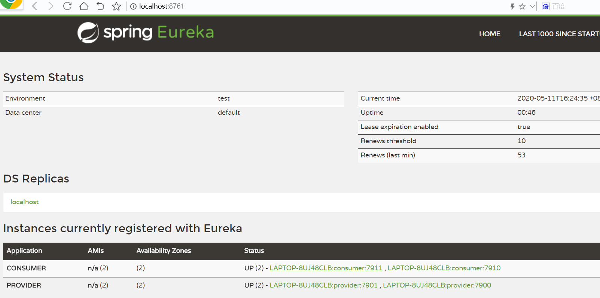
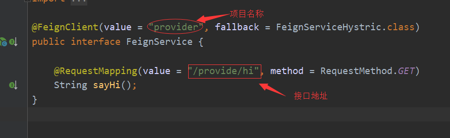

SpringCloud
一、Eureka + Ribbon + Fegin
参考：
SpringCloud学习笔记（一） 搭建一个SpringCloud[Ribbon部分]
SpringBoot2.2.0.REALESE+SpringCloud项目地址
注册中心, provider --------->eureka ----------> consumer
Ribbon @loadBanlaced
1.Ribbon
Ribbon相当于底层协议，主要应该还是要使用open-feign
1.引入open-feign maven依赖
<dependency>
<groupId>org.springframework.cloud</groupId>
<artifactId>spring-cloud-starter-openfeign</artifactId>
</dependency>
2.
@FeignClient("provider")
public interface FeignService {
@RequestMapping(value = "/provide/hi", method = RequestMethod.GET)
String sayHi();
}
3.
@SpringBootApplication
@EnableEurekaClient
@EnableFeignClients
public class FeignApplication {
public static void main(String[] args) {
SpringApplication.run(FeignApplication.class, args);
}
}
二、SpringCloud Config
注意：
1.配置文件 bootstrap.yml
加载config_server,需要使用bootstarp.yml(而不是application.yml)
1.加载顺序
这里主要是说明application和bootstrap的加载顺序。
bootstrap.yml（bootstrap.properties）先加载
application.yml（application.properties）后加载
bootstrap.yml 用于应用程序上下文的引导阶段。
bootstrap.yml 由父Spring ApplicationContext加载。
父ApplicationContext 被加载到使用 application.yml 的之前。
2.配置区别
bootstrap.yml 和application.yml 都可以用来配置参数。
bootstrap.yml 可以理解成系统级别的一些参数配置，这些参数一般是不会变动的。
application.yml 可以用来定义应用级别的，如果搭配 spring-cloud-config 使用 application.yml 里面定义的文件可以实现动态替换。
使用Spring Cloud Config Server时，应在 bootstrap.yml 中指定：
spring.application.name
spring.cloud.config.server.git.uri
一些加密/解密信息
注意：一旦bootStrap.yml 被加载，则内容不会被覆盖，即便后期加载的application.yml的内容标签与bootstrap的标签一致，application 也不会覆盖bootstrap, 而application.yml 里面的内容可以动态替换。
2.定位远程config文件的名字：
org.springframework.cloud.config.client.ConfigServicePropertySourceLocator#getRemoteEnvironment
六、Actuator
springcloud-eureka启动报错，提示The following method did not exist: org.springframework.boot.actuate.health
1.springcloud-eureka启动报错，提示The following method did not exist: org.springframework.boot.actuate.health.CompositeHealthIndicato
***************************
APPLICATION FAILED TO START
***************************
Description:
An attempt was made to call a method that does not exist. The attempt was made from the following location:
org.springframework.cloud.client.discovery.health.DiscoveryCompositeHealthIndicator.<init>(DiscoveryCompositeHealthIndicator.java:42)
The following method did not exist:
org.springframework.boot.actuate.health.CompositeHealthIndicator.<init>(Lorg/springframework/boot/actuate/health/HealthAggregator;)V
The method's class, org.springframework.boot.actuate.health.CompositeHealthIndicator, is available from the following locations:
jar:file:/C:/Users/zhao/.m2/repository/org/springframework/boot/spring-boot-actuator/2.2.0.M1/spring-boot-actuator-2.2.0.M1.jar!/org/springframework/boot/actuate/health/CompositeHealthIndicator.class
It was loaded from the following location:
file:/C:/Users/zhao/.m2/repository/org/springframework/boot/spring-boot-actuator/2.2.0.M1/spring-boot-actuator-2.2.0.M1.jar
Action:
这个是启动的时候找不到方法，每次迭代，或删或减或重构，某些类兴许就被删掉了。所以需要查看springcloud和springboot的版本对应关系，springcloud使用英文单词作为版本，springboot是用数字作为版本。
Table 1. Release train Spring Boot compatibility
Release Train Boot Version
Greenwich 2.1.x(可用2.1.4.RELEASE)
Finchley 2.0.x(可用2.0.5.RELEASE)
Edgware 1.5.x
Dalston 1.5.x
最新对应关系可以查看官网https://spring.io/projects/spring-cloud
七、示例
1.两个消费者，两个提供者

2.配置feign,调用别人的服务
